RED + WHITE
Surveying Alchemical Symbolism
in
Shakespeare's
VENUS + ADONIS
Are not the choysest Fables of the Poets, That were the Fountaines, and first Springs of Wisedome, Wrapt in perplexed Allegories? --Ben Jonson, the Alchemist
The aim of this work is to explore Alchemical symbolism and how it may have been used in Shakespeare's poem and reinterpretation of a Roman myth, Venus and Adonis, especially in the colors red + white as potential representatives of a gendered pair of universal principles as these are the principle components concocted in a process of spiritual death and resurrection referred to throughout this work as 'Alchemical transmutation'. These universal parents may well have been what Venus and Adonis represented in esoteric interpretations of the myth, and as such myths were intimately integrated into or even foundational to the Greco-Roman mystery religions and mystic rites of initiation, a parabolic interpretation of the ancient tale is deserved--and Shakespeare's treatment of it even more so.
While we may never know if Shakespeare successfully rebirthed lead into gold, or if he even took the great labor of Alchemy upon himself, that he was at least familiar with Alchemy and its ideas is apparent in his work. In Sonnet 33, for example, the poet gives a succinct summary of what Alchemy is in just the first four lines using just a few symbols: the Sun, gold, earth, and water.
Full many a glorious morning have I seen Flatter the mountain tops with sovereign eye, Kissing with golden face the meadows green, Gilding pale streams with heavenly alchemy; Anon permit the basest clouds to ride With ugly rack on his celestial face, And from the forlorn world his visage hide, Stealing unseen to west with this disgrace: Even so my sun one early morn did shine, With all triumphant splendour on my brow; But out, alack, he was but one hour mine, The region cloud hath mask'd him from me now. Yet him for this my love no whit disdaineth; Suns of the world may stain when heaven's sun staineth.
Here Shakespeare has taken Alchemy's two halves of the Universe, Heaven and Earth, and made lovers of them. Is there more to Alchemy than this? The Sun in Alchemy is in the man's role, his element is gold, among others, and he is fire--all symbols of divinity. As Shakespeare has it here, alchemy is synonymous with transformation from the mundane to the divine. The Sun's fire, the transformative agent, is loving, kissing and caressing, giving color to colorless streams and endowing the lovelorn Earth with its luminous gold--the gist of Alchemical transmutation.
Love is a spirit all compact of fire, Not gross to sink, but light, and will aspire. --Shakespeare, Venus and Adonis
On the suspicion that Shakespeare was versed in Alchemical symbolism insomuch that he might write an Alchemical allegory, his poem 'Venus and Adonis' was selected for investigation. And there's a reason for that.
Why 'Venus and Adonis' for Analysis
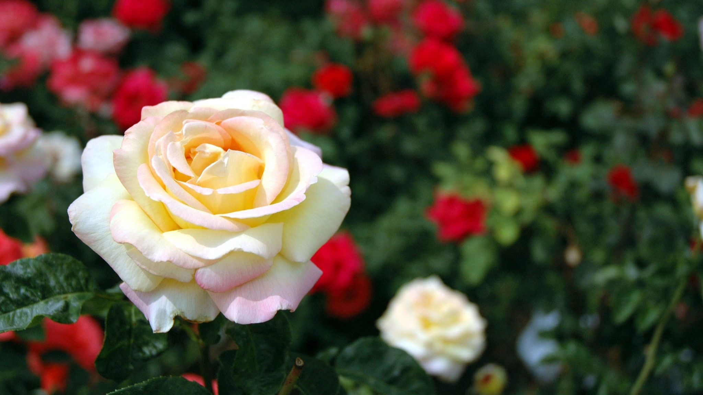From among Shakespeare's lush garden of poems, what makes 'Venus and Adonis' a ripe pick for picking apart is the mythological tradition from which it comes. While Shakespeare tells only a portion of it, the larger story of a god and goddess annually parted by death, the winter of her grief, and the spring to new life and refreshed love in his resurrection and return fits well with the general Alchemical narrative of transmutation which likewise centers on a pair of primordial lovers.
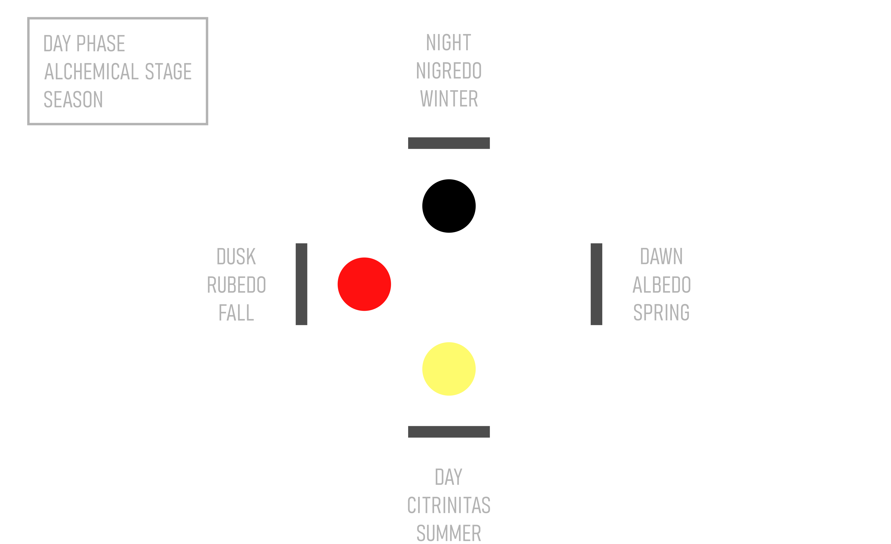The myth is, of course, bound to the cycle of the seasons where the regularly changing face of Nature is seen as an expression of the absence or presence of divine love. In 'Donum Dei' (Gift of God), written in 1475, the four seasons of Nature's transmutation are matched with four stages of Alchemy and posited as footsteps for Alchemists to walk in. The excerpt below introduces some common Alchemical symbols:
- the principle colors: black, white, and red;
- aspects of the masculine / feminine elements: dry / moist and hot / cold.
Therefore make white the black, and make red the white and you have the art (of Alchemy). For the year is divided into four parts, and so is our blessed work. The first is winter cold and moist, the second is ver, hot and moist, and flourishing. The third is the summer time, hot and dry, and red. The fourth is the harvest cold and dry, which is the time of gathering of fruit. This disposition colouring nature govern until such time it bring forth ripe fruit at pleasure.
--Chapter 12, Donum Dei
Though it differs from the graphic above, mentioning only three colors, discrepancies like this are common in Alchemical texts. The key takeaway is that the seasons are matched with sequential changes in a relationship between gendered pairs. Winter as cold and moist, for example, is extreme feminine.
This application of gender dynamics to the seasons is found also in the humoral theory of health which persisted for thousands of years. The basic theory is that human health was determined by a balance of four bodily fluids called humors. In a proto-psychology based on this idea there were also the four temperaments and these corresponded to the four seasons and their gendered aspects (e.g. Choleric = hot + dry):
- Melancholic (Sad) / Winter
- Sanguine (Happy) / Spring
- Choleric (Angry) / Summer
- Phlegmatic (Calm) / Autumn
Nature and the Artist
That the four temperaments would correspond to the four seasons is fitting, for whether people do it consciously or unconsciously we make connections between the face of Nature and our own internal emotional state. Happiness, for example, is typically associated with sunniness and cloudless skies. Thus the seasons are a common object of symbolic use in poetry, and one question hanging over the study of mythology is whether myths such as that of Venus and Adonis are to be taken literally or metaphorically, being potentially a poetic means of expressing spiritual teachings. Shakespeare himself artistically uses the seasons to express how he perceives the presence and absence of his beloved in Sonnet 97, which could just as well have been Venus writing to the deceased Adonis.
How like a winter hath my absence been From thee, the pleasure of the fleeting year! What freezings have I felt, what dark days seen, What old December’s bareness everywhere! And yet this time removed was summer’s time, The teeming autumn, big with rich increase, Bearing the wanton burden of the prime, Like widowed wombs after their lords’ decease. Yet this abundant issue seemed to me But hope of orphans and unfathered fruit; For summer and his pleasures wait on thee, And thou away, the very birds are mute; Or if they sing, ’tis with so dull a cheer That leaves look pale, dreading the winter’s near.
He continues on in this theme in the following sonnet of his sequence, but in this inserts an Alchemical idea similar to what we saw above. Here it is "heavy Saturn" who has been transformed, made light-hearted, laughing and leaping, infused by a youthful spirit. Saturn, the dimmest of the Seven Classical Planets, whose day is last in the days of the week, was linked with the dullest of the Seven Metals in Alchemy, lead. So, Spring has taken a dour and dark metal and made it bright and alive like lightly leaping fire. Here we also see the pairing of red and white in verses that echo what we will see again in the poem 'Venus and Adonis.'
From you have I been absent in the spring, When proud-pied April, dressed in all his trim, Hath put a spirit of youth in everything, That heavy Saturn laughed and leaped with him. Yet nor the lays of birds, nor the sweet smell Of different flowers in odour and in hue, Could make me any summer’s story tell, Or from their proud lap pluck them where they grew: Nor did I wonder at the lily’s white, Nor praise the deep vermilion in the rose ; They were but sweet, but figures of delight Drawn after you, – you pattern of all those. Yet seem’d it winter still, and, you away, As with your shadow I with these did play.
A Brief History
The story of Venus and Adonis was one commemorated in many forms by many peoples of the Near East and Mediterranean tracing back to the cradle of civilization. The earliest known version of the story is the ancient Sumerian myth of Inanna (Lady of Heaven) and Dumuzi (Faithful Son) found inscribed in tablets dating to 2100 - 2000 BCE. Though he was often described as a shepherd, Dumuzi was also known among the Sumerians as "The Bull of Heaven". Inanna and Dumuzi came to be known as Ishtar and Tammuz (Damu) among the Babylonians.
A Lamentation for Tammuz
The god ... great one; lord of the year who sitteth; lord sadly .. Stormy weeping for the mighty one, the god Damu .... Stormy weeping for the youthful one, lord of the name of life. Stormy weeping for the god of the word of judgment, of the eye of precious stones ... Stormy weeping for the god, the artificer, the lord of ..... Stormy weeping for the artificer, the lord of ..... Stormy weeping for him who is the light of my heaven .... The terrific storm has bent him, making him bite the dust. . Source
This couple subsequently came to be known as Astarte and Tammuz among the Phoenicians who exported the pair of deities to Greece along with the Semitic term Adon (Lord). Adon shares the same root as the Hebrew Adonai used for God in the Bible where it also means Lord. This title of course became Adonis among the Greeks. It is unknown where the name Aphrodite came from or even what it means, while Venus, it is known, comes from a Latin word venus which means "love, beauty, charm".
From the Sumerians to the Romans, the pair weren't just the subject of myth but also of annual rites. Among these were the ritual acts of women weeping and beating their breasts in lamentation for the slain deity and the celebration of his resurrection and reunion with his love in a rite known as the Sacred Marriage. In Mesopotamia the Sacred Marriage ritual typically involved a priestess of the Goddess and a king, priest, or priest-king who may have served as actors, or were seen as incarnations of deity, performing the sacred sexual union. In the Adonia festivals of Greece a bridal bed would be prepared with the finest coverings, surrounded with offerings and/or adorned with flowers in a symbolic anticipation of Adonis' return from the dead and temporary reunion with Aphrodite.
Adonis: the Field's Chief Flower
Although the ancient story of Adonis is believed told in the story of a plant or, perhaps more specifically, in a flower which dies as a seed when submerged in soil making way for a new life to spring from the ground, it could be argued that his story is of the annual death and resurrection of the Sun. As Nature's transmutation throughout the year hinges on the relationship between the Sun and the Earth, it is plausible that these are the two original characters of the myth. But we needn't discard one idea for the other.
The Orphic Hymn to Adonis (2nd - 3rd century CE)
Much-named, and best of daimons, hear my prayer, the desert-loving, decked with tender hair; Joy to diffuse, by all desired is yours, much formed, Eubouleos; aliment divine Female and Male, all charming to the sight, Adonis ever flourishing and bright; At stated periods doomed to set and rise, with splendid lamp, the glory of the skies. Two-horned and lovely, reverenced with tears, of beauteous form, adorned with copious hairs. Rejoicing in the chace, all-graceful power, sweet plant of Aphrodite, Love’s delightful flower: Descended from the secret bed divine, of lovely-haired, infernal Persephone. ‘Tis yours to sink in Tartarus profound, and shine again through heaven’s illustrious round, With beauteous temporal orb restored to sight; come, with earth’s fruits, and in these flames delight.
Adonis, Celestial Sun or Terrestrial
Comparing this hymn to the Orphic Hymn to the Sun, similarities are apparent, but regardless, this hymn appears to be referring to the Sun. The reference to Adonis as "Glory of the skies" but also as "Love's delightful flower" is a case where poetic sensibilities may come in handy, for we can simply view the bright bodies in the sky as a field of flowers to reconcile the apparent contradiction, but is that what was meant?
This idea of the Sun as a flower is one mentioned by Zosimos, an Alchemist living in the 3rd to 4th centuries CE, who describes the Sun as a "flower of fire" apparently referring to the primordial Fire which engendered the Universe through copulation with the primordial Waters--which makes a possible link with Eros. Eros (Love) which is the original Greek word used in the above hymn, was in some Greek cosmogonies the Father of all. Hence, "(Eros') delightful flower" in the hymn could likewise be a reference to the Sun. Note that Zosimos in the quote below, doesn't only refer to the Sun as a flower, but also the Alchemist who is the copper that must bloom.
Just as there is a sun, a flower of fire, the celestial sun, right eye of the world; likewise copper, if it blooms (which is to say, if it takes the color of gold) by purification, then it becomes an earthly sun, which is king on earth, as the sun is king in heaven.
--Zosimos of Panopolis
Shakespeare, in his poem, describes Adonis as an earthly sun through the mouth of Venus in a stanza that recalls the sonnet quoted at the beginning and one we will look at later written for his beloved whose bright eye, like the Sun, "gild(s) the object whereupon it gazeth":
The sun that shines from heaven shines but warm, And, lo, I lie between that sun and thee. The heat I have from thence doth little harm; Thine eye darts forth the fire that burneth me, And were I not immortal, life were done Between this heavenly and earthly sun.
Already in the information provided we have reason to believe Adonis is equivalent to the masculine principle of Alchemy which is represented by the Sun, among other things, though rather than being the Father of all things in the mythology which has followed him, there is more reason to believe he is the Son, the Seed of all things.
Venus: Magna Mater
It would sound dubious that the English word matter derives from the Latin word for mother assuming a missing history of how the Universe was created in a Greco-Roman view, or rather, how it was conceived. Indeed, the widespread existence of gendered languages, such as Latin and Greek, stands as evidence to a prehistoric belief that the Universe is the offspring of two primordial parents, and it is their polar qualities that allow for Nature to attain its life-promoting balance. Nature needs both the hot ascending fire and the cold descending rain. And so, various facets of Nature were tied to one of these two archetypes of gender--something we see done explicitly in Alchemy where hot and cold, dry and wet, day and night, summer and winter were seen as but a few of the many faces of the two who conceived the Everything.
A common conception of these primary masculine and feminine elements is 'Father Heaven and Mother Earth'. While these appellations are often interpreted as 'sky and ground' they are more appropriately interpreted as 'spirit and matter' for, in the ancient view, the cosmos had an immaterial and insensible half associated with order, perfection, timelessness, and consistency, and a half perceptible by the senses associated with chaos, imperfection, time, and change which is called 'material' from mater the Latin word for mother. It was these two halves which made up the being we call Universe in a way analogous to a human being, a body possessed of a spirit.
"The spirit of God hovered over the face of the waters" in the Book of Genesis, is a picture of the first two gendered principles in erotic posture just prior to consummating an act of Love. The waters here--and in other religious contexts--represent the soil of creation, a formless substance to be informed by the issued seed, making her the Mother of all things.
The Orphic Hymn to Aphrodite (Venus)
Heavenly, smiling Aphrodite, praised in many hymns, sea-born, revered goddess of generation, you like the nightlong revel and you couple lovers at night, O scheming mother of Necessity. Everything comes from you; you have yoked the world, and you control all three realms. You give birth to all, to everything in heaven, upon the fruitful earth and in the depths of the sea...
At some point in the past, people had gathered that seeds grow by a word or command which is contained within them and they made a connection between this process and the Universe's own germination. So the universal seed was called by Greek philosophers logos spermatikos which means 'seminal word'. This same Word is introduced in the Gospel of John:
In the beginning was the Word, and the Word was with God, and the Word was God. He was with God in the beginning. Through him all things were made; and nothing that has been made was made but through him. In him (is) life, and that life (is) the light of all mankind. The light shines in the darkness, and the darkness has not overcome it.
What is not present in John is the Word's other half, the feminine princple, the soil of creation from which burgeoned the Tree of Life we call Universe. Krishna says of this tree in the Bhagavad Gita that its roots are above and its branches are below. It is possible that Adonis as "sweet plant of Aphrodite" refers to this same offspring for in some versions of the myth Adonis is not only the lover of the Goddess, but also her son.
The Divine Hermaphrodite
Father Heaven and Mother Earth are common depictions of the primordial parents, but what is found along with this depiction, though less commonly, is the idea that these two are halves of one being. Furthermore there is found the idea that the archetypal or complete human is a hermaphrodite, made in the divine image, both male and female. Perhaps nowhere is this more apparent than in Alchemy where the hermaphrodite is repeatedly used as a symbol for the culmination of the Alchemical process.
Hermaphroditic deities were more common in the ancient world than people might think. An argument that the Book of Genesis describes how God created Adam "male and female" in God's image could be made, but this is for another article. On the same note, we see in Plato's Symposium that the first humans where two-in-one pairs called Androgynes (andro = "man", gyne = "woman") and in Egypt there is a creation myth that describes how the Universe originated from the separation of androgynous deities into male/female couples. The subject is relevant here because the Hermaphrodite is one of the most prominent symbols of wholeness and completeness in Alchemy but too the very term comes from the mythology around Aphrodite and her child.
On left: from 'Quinta Essentia' the Divine Hermaphrodite stands amidst the Wheel of the Zodiac. This symbol of the yearly cycle of the seasons, is instead divided into the four temperaments. The being is flanked on both sides by two viles, one of Sulfur (masculine) and one Mercury (feminine) implying that this wheel of time is itself a hermaphrodite, ascending on one side while it descends on the other.
On right: from 'Theoria Philosophiae Hermeticae' the Hermaphrodite here is named 'Rebis' an abridged form of res binas "combined things". Over the being's head are the symbols of the Seven Classical Planets: Sun, Moon, Mars, Mercury, Jupiter, Venus, and Saturn. Six of the planets are paired by a line with their opposites: Sun/Saturn, Moon/Venus, Mars/Jupiter. Mercury remains alone in the center. Being the messenger of the gods, Mercury was seen as a union of opposites, of Heaven and Earth. While Sun and Moon are typically seen as opposites while Mercury alone possesses both. All of the lunar plaents are on the right side and all of the solar are on the left, and Mercury alone is in the middle just as Mercury's day is in the middle of the week. Not coincidentally, the god Mercury (Hermes) was associated with the "union of opposites".
Already in the Orphic hymn to Adonis we saw the God referred to as "Female and Male", but so too was Venus/Aphrodite seen as a hermaphrodite in certain contexts--and her child. Cross-gender behavior appears a permanent fixture in Goddess worship from the early days of the Sumerian city-states to the end of the Roman Empire, apparently due to the belief that the deity is both sexes.
There's also a statue of Venus on Cyprus, that's bearded, shaped and dressed like a woman, with scepter and male genitals, and they conceive her as both male and female. Aristophanes calls her Aphroditus, and Laevius says: Worshiping, then, the nurturing god Venus, whether she is male or female, just as the Moon is a nurturing goddess. In his Atthis Philochorus, too, states that she is the Moon and that men sacrifice to her in women's dress, women in men's, because she is held to be both male and female.
--Marcobius, Saturnalia 3.8.2
Salmacis and Hermaphroditus
This story is similar to Ovid's tale of Venus and Adonis but for that the man being chased by an adoring woman, doesn't die, not in the literal sense, nor does a flower grow in the spot where death consumed him. Rather, when Salmacis sees Hermaphroditus bathing in the spring she haunted, being immediately enraptured, she wraps herself around him and prays to the gods that she and the son of Hermes and Aphrodite should never part. The gods grant her request, fusing the two beings into one body, a single being both male and female. One question that appears begging to be asked is: is the merging of male and female into one what Adonis had in store had he chosen to love Venus instead of going hunting? Is that the meaning of the red and white flower that springs from his blood?
On left: from the Alchemical manuscript, Splendor Solis (1582), depiction of a Hermaphrodite in the three principle colors of Alchemy, black, white, and red. Red and white here coloring the wings as if to imply having both forms makes the being divine. The being holds what is apparently meant to represent the Philosopher's Stone in the semblance of an egg. The image in the book is adjacent a parable on how the Stone is like an egg, uniting the 4 opposites (hot/cold, dry/wet) into one.
On right: a painting of Hermes and Aphrodite, parents of Hermaphroditus, by Walter Crane (1890) titled 'L'Art et la Vie' (Art and Life)
In Ovid's telling of Salmacis and Hermaphroditus, red and white appear together also, only briefly, when Salmacis attempts to gain affection and causes Hermaphroditus to blush:
‘After this the naiad was silent. A red flush branded the boy’s face. He did not know what love was: though the blush was very becoming. Apples are tinged with this colour, hanging in a sunlit tree, or ivory painted with red, or the moon, eclipsed, blushing in her brightness, while the bronze shields clash, in vain, to rescue her.
Note that here Ovid is comparing Hermaphroditus to a damsel in distress in the Moon who blushes because men are fighting to rescue her. Shakespeare gives Adonis a similar treatment when he writes:
He burns with bashful shame; she with her tears Doth quench the maiden burning of his cheeks. Then with her windy sighs and golden hairs To fan and blow them dry again she seeks. He saith she is immodest, blames her miss; What follows more she murders with a kiss.
Passing Notes, Ovid to Shake
The Sun's Eye of Passion
The nymph’s eyes blazed with passion, as when (the Sun's) likeness is reflected from a mirror, that opposes his brightest unclouded orb. She can scarcely wait, scarcely contain her delight, now longing to hold him, now unable to keep her love to herself. --Ovid, Metamorphoses: Salmacis and Hermaphroditus
The night of sorrow now is turned to day. Her two blue windows faintly she upheaveth Like the fair sun when in his fresh array He cheers the morn and all the earth relieveth; And as the bright sun glorifies the sky, So is her face illumined with her eye, --Shakespeare, Venus and Adonis
Consider the Lilies of the Field
Clapping his open palms to his side, he dives into the pool, and leading with one arm and then the other, he gleams through the pure water as if one sheathed an ivory statue, or bright lilies behind clear glass. --Ovid, Metamorphoses: Salmacis and Hermaphroditus
Full gently now she takes him by the hand, A lily prisoned in a jail of snow, Or ivory in an alabaster band, So white a friend engirts so white a foe. This beauteous combat, willful and unwilling, Showed like two silver doves that sit a-billing. --Shakespeare, Venus and Adonis
Paintings of Salmacis and Hermaphroditus
 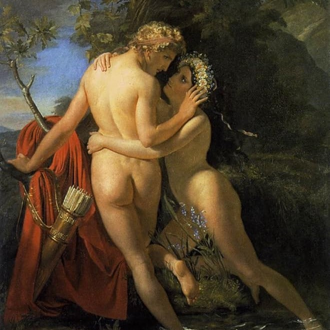
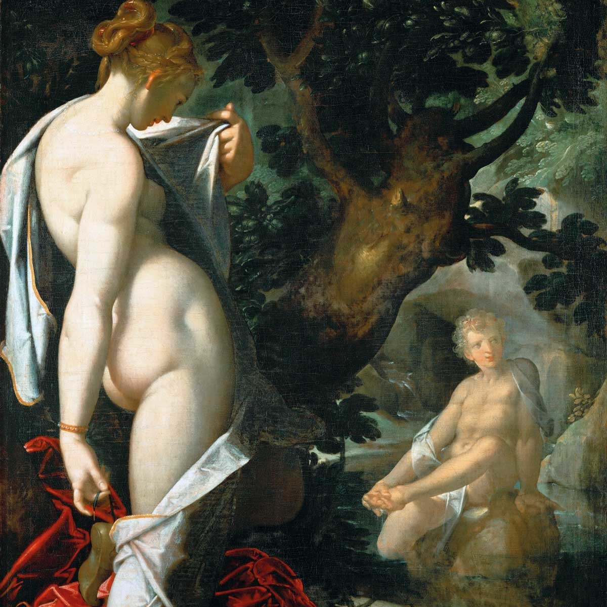
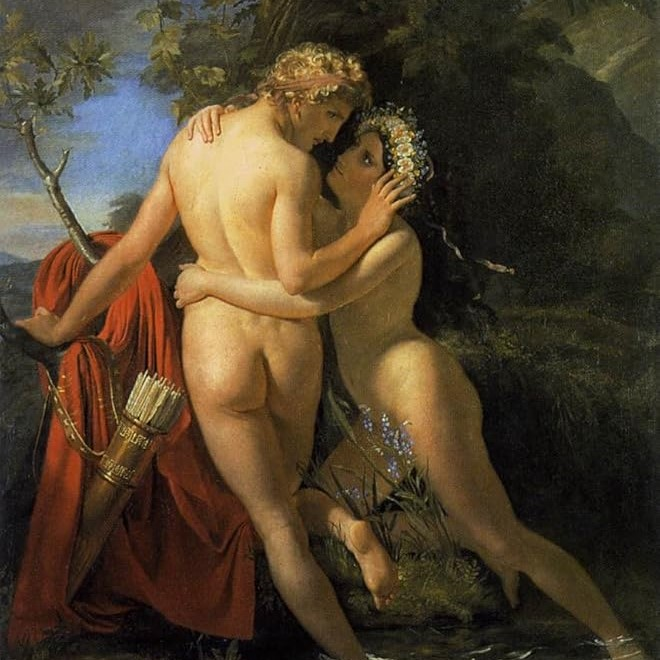
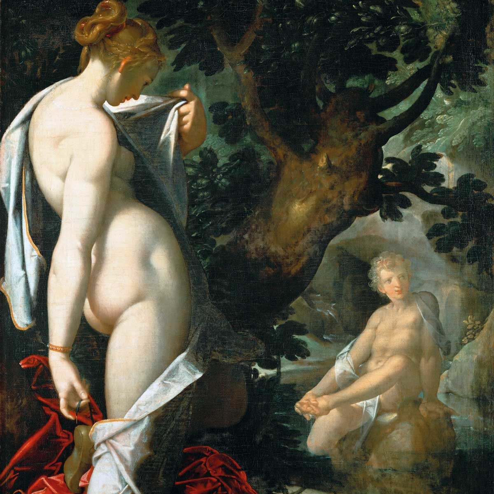
Hermaphroditus was a popular deity among the Greeks (Hermaphroditos in Greek) and Romans, and there are many statues carved in veneration. Interestingly, the common depiction of the being described as both male and female is as a woman with a penis and testicles. Recall that in the Orphic hymn, Adonis is called 'Female and Male'.
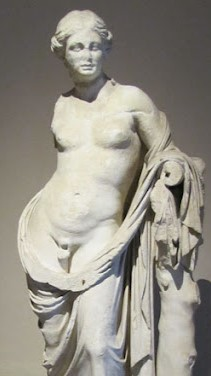 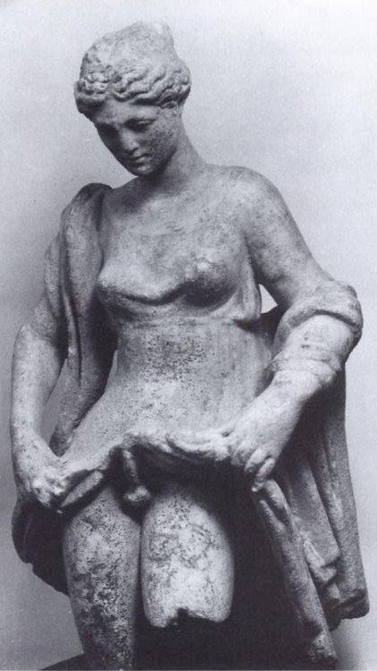 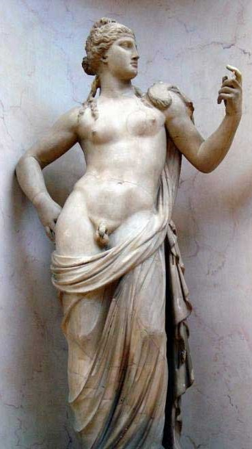 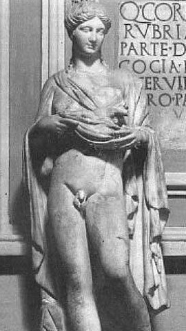The concept of a hermaphrodite like what is depicted above, what we call a transgender woman, was not foreign to Shakespeare. Indeed, the Bard dedicated the majority of his sonnets to such a person, though it doesn't become obvious until Sonnet 20 where Shakespeare makes it known the man he's been writing to was meant to be a woman but given a penis by a-doting Nature that he should give women pleasure.
A woman’s face with nature’s own hand painted Hast thou, the master-mistress of my passion; A woman’s gentle heart, but not acquainted With shifting change as is false women’s fashion; An eye more bright than theirs, less false in rolling, Gilding the object whereupon it gazeth; A man in hue, all hues in his controlling, Which steals men’s eyes and women’s souls amazeth. And for a woman wert thou first created, Till nature as she wrought thee fell a-doting, And by addition me of thee defeated By adding one thing to my purpose nothing. But since she pricked thee out for women's pleasure, Mine be thy love and thy love’s use their treasure.
A Philosophy of Fire
The myth of Venus and Adonis is seen as a primitive attempt to explain the changing of the seasons, but given what we've seen in the Orphic hymns we could say that the myth is just an observation of the regularly changing relationship between the Sun (Adonis) and the Earth (Venus) turned into a romance, but that leaves the question: why make a myth out of it?
One answer we have seen already: the cycle of the seasons is a natural precedent as parable of spiritual transformation in Alchemy. Evidence that it may have served a similar purpose in the ancient Mediterranean is found in the ancient mystery religions of the area. The mystery religions/cults were initiatory groups which buried spiritual teachings in ceremonies, symbols, and myths, i.e. "mysteries" many of which were shared openly with the public while their true meaning was not. It is from these groups that we get terms such as "mystic/mysticism" and possibly even the word "myth". The only argument to be made for that here is that myths were intimately integrated into mystic rites of initiation in such a way that we could call them fundamental. It was common for mystery religions to be centered on a single myth and these stories typically concerned the subject of death and resurrection or the quest for immortality--the same as Alchemy.
One such myth was that of Demeter and Persephone, the central myth of the Eleusinian Mysteries. Like the myth of Venus and Adonis, this story of a mother and her daughter was linked with the changing of the seasons and was so integral in cult practices that the main rites known as the Lesser and Greater Mysteries were performed on or around the Equinoxes, the times of transition for mother and daughter. The Lesser Mysteries which were open to the public were performed at the Spring Equinox when Persephone emerged from the underworld. The Greater Mysteries, reserved for initiates were performed at the Autumn Equinox when Persephone returned to the realm of the dead. The Eleusinian Mysteries, despite being tauntingly mysterious are among the better known mystery religions. It is known that religious mysteries centering on Venus and Adonis existed, but little is known about them. However, if we take as a given that they existed, we have reason to believe the story of the two lovers served as an initiation myth. In other words, there is a supposed wisdom buried in it as the myth isn't really about Nature's transformation, but about ours.
One thing the myths of Demeter and Persephone and Venus and Adonis have in common besides the impetus for seasonal change, is the fact they center on a love relationship. It's not that Adonis has returned to life that causes plants to grow, but that he has returned to his love.
"What then is Love?" I (Socrates) asked, "Is he mortal?" "No." (Diotima replied) "What then?" "As in the former instance, he is neither mortal nor immortal, but is a mean between the two." "What is he, Diotima?" "He is a great spirit, and like all spirits he is intermediate between the divine and the mortal." "And what," I said, "is his power?" "He interprets," she replied, "between gods and men, conveying and taking across to the gods the prayers and sacrifices of men, and to men the commands and replies of the gods; he is the mediator who spans the chasm which divides them, and therefore in him all is bound together, and through him the arts of the prophet and the priest, their sacrifices and mysteries and charms, and all, prophecy and incantation, find their way. For God mingles not with man; but through Love." --Plato's Symposium
Venus is often deemed the Goddess of Love, her only-begotten child in some accounts is Love, and, in some accounts, it was this Love which created the Universe by making love with the primordial Chaos. To love then is an act of worship or devotion to the primal mover of all things, and so it is fitting that in this region and time there appears to be not a straight line between priest(ess) and prostitute. Sacred prostitutes, both men and women, followed the Goddess from her ancient Mesopotamian home as she traveled around the Mediterranean. For many men who served the Goddess, this meant serving in the woman's role.
That of the Immortals did not exist until Eros (Love) had brought together all the ingredients of the world, and from their marriage Heaven, Ocean, Earth and the imperishable race of blessed gods sprang into being. (...) We are the offspring of Eros; there are a thousand proofs to show it. We have wings and we lend assistance to lovers. How many handsome youths, who had sworn to remain insensible, have opened their thighs because of our power and have yielded themselves to their lovers when almost at the end of their youth, being led away by the gift of a quail, a waterfowl, a goose, or a cock.
--Aristophanes, 'Birds' 414 BCE
It should be pointed out that in relationship to the Divine, it is often seen in religion that the human soul takes the feminine role. So, we see the nation of Israel depicted in the Bible as God's wife, in India souls devoted to Krishna are portrayed as women in stories and in paintings, and in Greek myth, Psyche, the personification of Soul, is represented as a woman in Soul's encounter with Love. Love in the end becomes her husband, and she his wife, and in so doing, Soul becomes divine.
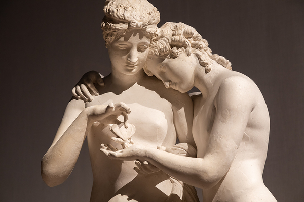Psyche and Eros, Antonio Canova, 1793
In the statue above, Eros hands Psyche a butterfly, a gift which intimates a metamorphosis the soul must undertake. Psyche is similarly depicted in art with butterfly wings of her own that sprout from her back and which stand in juxtaposition to Eros's bird wings as a sign that she was not born divine, but learned the lesson of the caterpillar who dies so that the butterfly can rise.
Given that this transformation is the subject of many religions and philosophies, we could say that these wisdom traditions are in essence about our relationship to Love. If wisdom is that which leads to a life we loveThe "Love of Wisdom" which is how the word philosophy is typically translated, could just as well be translated "Wisdom of Love" or just "Love + Wisdom" for, as the Apostle Paul might say, there is no wisdom without love:
If I speak in the tongues of men or of angels, but do not have love, I am only a resounding gong or a clanging cymbal. If I have the gift of prophecy and can fathom all mysteries and all knowledge, and if I have a faith that can move mountains, but do not have love, I am nothing. If I give all I possess to the poor and give over my body to hardship that I may boast, but do not have love, I gain nothing. (...) Love never fails. But where there are prophecies, they will cease; where there are tongues, they will be stilled; where there is knowledge, it will pass away. For we know in part and we prophesy in part, but when completeness comes, what is in part disappears.
--1 Corinthians 13
The myth of Venus and Adonis is but one of many Greco-Roman myths of a certain type: transformation myths which center on a love pursuit. This type of myth is congruent with Alchemy at large, for in general there is no Alchemy without transformation and there is no transformation without Fire.
Venus and Adonis in Ovid's 'Metamorphoses'
'Metamorphoses' is a compendium of Greco-Roman transformation myths in 15 books gathered by the Roman poet Ovid in 8 CE. Written as a poem, Metamorphoses begins with the creation of the Universe as a differentiation of the primordial Chaos into into ordered parts and transitions through loosely connected myths of mortals, immortals, lovers, enemies, and other numerous things culminating in the deification of the Roman Emperor, Julius Caesar. Taken all together a history from the first how a god came to be enthroned upon the Earth could be seen as one big picture of Alchemical transmutation. Not surprisingly, Metamorphoses, was a source of inspiration for Alchemists, as Harvard classicist, Edward Kennard Rand, is quoted in Ovid and the Alchemists
Ovid’s text is made a quarry for the alchemist’s pick and shovel. The fable of Deucalion and Pyrrha, for instance, betokens, like the twin peaks of Parnassus, the masculine and the feminine elements among the metals, that is, gold and silver, from the union of which the philosopher’s stone is produced. In this fashion, the whole poem is subjected to the fatal touch of Midas; Ovid’s gold is converted into the baser metal.
Of course, one of the myths told in Metamorphoses is that of Venus and Adonis, and it is this telling which is believed to be the source of inspiration for Shakespeare fifteen centuries later. There are some key differences. Unlike Shakespeare's version, Ovid's tale of Venus and Adonis has three transformation myths in one. The two tales Shakespeare leaves out are:
Myrrha and Cinyras.
Story of the mother of Adonis being turned into a Myrtle tree to escape her enraged father who wanted blood after discovering she had deceived him into having sex and impregnating her. Adonis was born from the tree.
Atalanta and Hippomenes
The story of a race between a woman who refused marriage and a man who was in love with her, racing to win her hand or die trying, then winning by tossing Golden Apples of the Hesperides to lure the woman off track and their subsequent transformation into lions for snubbing the Goddess telling the story to Adonis, Venus.
Though Ovid was not the only ancient author to recount it, the story of Atalanta and Hippomenes was one such taken for Alchemist plunder. The oft-mentioned Alchemical text 'Atalanta Fugiens' by Michael Maier (1617) takes its name (Atalanta Fleeing) from this story and Maier introduces his book with his own distilled rendition of it tinted with Alchemical symbols:
Three Golden Apples from the Hesperian grove. A present Worthy of the Queen of Love. Gave wise Hippomenes Eternal Fame. And Atalanta's cruel Speed O'ercame. In Vain he follows 'till with Radiant Light, One Rolling Apple captivates her Sight. And by its glittering charms retards her flight. She Soon Outruns him but fresh rays of Gold, Her Longing Eyes & Slackened Footsteps Hold, 'Till with disdain She all his Art defies, And Swifter then an Eastern Tempest flies. Then his despair throws his last Hope away, For she must Yield whom Love & Gold betray. What is Hippomenes, true Wisdom knows. And whence the Speed of Atalanta Flows. She with Mercurial Swiftness is Endued, Which Yields by Sulphur's prudent Strength pursued. But when in Cybel's temple they would prove The utmost joys of their Excessive Love, The Matron Goddess thought herself disdained, Her rites Unhallowed & her shrine profaned. Then her Revenge makes Roughness o'er them rise, And Hideous feireenesse Sparkle from their Eyes. Still more Amazed to see themselves look red, Whilst both to Lions changed Each Other dread. He that can Cybell's Mystic change Explain, And those two Lions with true Redness stain, Commands that treasure plenteous Nature gives And free from Pain in Wisdom's Splendor lives. --Michael Maier, Atalanta Fugiens
Describing Atalanta's swiftness as "mercurial" reinforces the idea of one fleeing Love, for when extracting mercury by fire's heat from its naturally occurring salt, mercury sulfide, mercury flies up as a vapor while her other half, sulfur, remains. Hence mercury was seen among Alchemists as one who flees the fire, while sulfur (aka brimstone), was seen as like fire. Maier here has mercury eventually yielding to "Sulphur's prudent strength" which all together reinforces the idea of transmutation as a Love pursuit which the Alchemist eventually yields to, being in the woman's role.
Perhaps making the connection between the two tales, Shakespeare has Adonis more like Atalanta, bashful, reluctant, even "frosty", which may be why he leaves the story of Atalanta out. Venus thus is in the man's role in Shakespeare's poem, and perhaps as a substitute for Atalanta's story he has Venus describe a hare being chased, and also how a male horse reacts when he sees a female he is hot for, likewise linking him with fire.
His ears up-pricked, his braided hanging mane Upon his compassed crest now stand on end. His nostrils drink the air, and forth again, As from a furnace, vapors doth he send. His eye, which scornfully glisters like fire, Shows his hot courage and his high desire.
In this poem, Venus is regularly linked with fire as in:
She red and hot as coals of glowing fire, He red for shame but frosty in desire.
One point where Ovid and Shakespeare are in agreement flower grown from Adon's blood they appear to be on the same page. Shakespeare says:
And in his blood that on the ground lay spill’d, A purple flower sprung up, chequer’d with white; Resembling well his pale cheeks, and the blood Which in round drops upon their whiteness stood.
Note that Shakespeare uses purple here to denote the color of blood. In his time purple wasn't restricted to the hue it is now and could be used for a range of hue including dark or rich reds. Shakespeare often uses purple when describing blood's color. Ovid tells us the flower is a "blood-colored anemone", leaving us with one flower as an obvious candidate.

The Red Crown Anemone, or the anemone coronaria. The flower blooms in a variety of colors, but there is a peculiar variant with petals around its black crown that transition from white to red. A flower native to the Mediterranean, its name is supposed to derive from the Greek anemone, "windflower". Ovid is in agreement stating the flower is "too easily fallen, the winds deflower it, which are likewise responsible for its name, windflower". Other sources say it is so called because the flower will not bloom until it has been touched by the wind. Some believe the name anemone comes from the Arabic name of this particular flower, shaqa'iq An-Nu'man (wounds of An-Nu'man) and that An-Nu'man derived from an epithet for Tammuz, the Semitic counterpart of Adonis. The Red Crown Anemone is the national flower of Israel.
The fact that the flower which pays tribute to the slain deity is painted in the three principle colors of Alchemy, and that Adonis himself is called a flower, lends to the idea that, in blooming, the Alchemist becomes Adonis, the deity resurrected, a sun on Earth, and, last but not least, the Divine Hermaphrodite the masculine and feminine principle united.
Overview of Alchemy
The symbol of chemistry is drawn from the creation by its adepts, who cleanse and save the divine soul bound in the elements, and who free the divine spirit from its mixture with the flesh.
--Zosimos of Panopolis
Alchemy, in brief, is the predecessor of modern science nestled in the belief that the universe is an expression of God's Word, that truths bound in parables abound in Nature from the seldom seen formation of salts to the everyday apparent changing of the seasons. Hence, the tendency in teaching the Art--because it was esoteric--to transmit knowledge in allegory or image using symbolism which had a natural precedent, e.g. fire, salt, gold, seed, etc.. Were it possible to sum the concern of these teachings into a single word, it would have to be transformation or evolution, for as the world turns, it turns out.
So, similar to the way a seed moved by sunlight metamorphoses soil and water into the unearthly loveliness of a rose, so Alchemists sought to transform their own being from something gross (like lead) into some divine thing worthy of show--though there is a key difference. Alchemists saw humans as participants in Creation, and thus made the distinction between Nature and Art as like that between the left hand and the right.
Nature, herself an Alchemist, causes grain to grow from the ground, but for the edible part to be separated from the chaff, ground into flour, and mixed with leaven to make bread requires the intervention of Art. So, while a seed refiguring itself into a plant was used as a religious parable, taking wheat Nature had produced and turning it into bread would be a better illustration of Alchemy's transmutation. So, Alchemy was sometimes called the Royal Art, and the enterprise of bringing the light of a buried deity to life was called the Magnum Opus (Great Work).
In only the last year did I start to study Alchemy and become familiar with its symbols. Though I am no expert, some things have become apparent. One is that there is no canon of Alchemy, but still there are some ideas and corresponding symbols which are consistent, such as the belief in a universal masculine and feminine principle which are often represented by what were conceived of as opposites or gendered pairs: the metals Gold and Silver, the celestial bodies Sun and Moon, the elements Sulfur and Mercury, or a pair of the Four Elements, Fire and Water, sometimes Air (Wind) and Water. They were also represented by the Red King and White Queen, or simply red and white.
The "union of opposites" is a major theme of Alchemy, and for those who practiced it the world was full of opposites. All opposites were initially one within an inchoate and formless mass (the mother) before the germination of the seed began to separate them, and so creation was seen as a descent from unity into division like a tree growing upside down. A tale along these lines comes from Ovid's 'Metamorphoses'--a book about transformation.
Before there was earth or sea or the sky that covers everything, Nature appeared the same throughout the whole world: what we call chaos: a raw confused mass, nothing but inert matter, badly combined discordant atoms of things (...) Nothing retained its shape, one thing obstructed another, because in the one body, cold fought with heat, moist with dry, soft with hard, and weight with weightless things.
The process of transmutation which Alchemists took upon themselves often involved uniting such opposed components of their own being into one, an ascension from division to unity, though what exactly this means is not clear and it should be pointed out that Alchemical texts are often deliberately obscure. On right, a diagram by the Alchemist, George Ripley, depicting the stages of transmutation as a dual-stemmed plant crowned with a golden flower. Note also the red and white buds. Below, a sample from a text titled 'The Hermaphrodite Child of Sun and Moon' to give a taste of how cloudy the language can be but also note how the author, apparently speaking on behalf of that which Alchemists seek, describes himself as "dry water".
Hermes called me the Sun and the Moon. Riplaeus called me the green lion. Our author called me hermaphrodite, but I pay no attention to that. It makes no difference. Nor does it matter what the sophists call me, for they learn nothing for all their trouble except: (1) I am One Substance, not two; (2) In me is Bernard's little fountain; (3) I am dry water, subtle pure; (4) I am raised up by the power of Mars, as commanded by Philaleth, the famous Adept who coagulates my esoteric nature with Mercury.
The paradoxical nature of "dry water" is likewise used by Shakespeare in 'Romeo + Juliet' in Romeo's paradox-filled monologue about brawling love.
O me! What fray was here? Yet tell me not, for I have heard it all. Here's much to do with hate, but more with love. Why, then, O brawling love! O loving hate! O any thing, of nothing first create! O heavy lightness! serious vanity! Misshapen chaos of well-seeming forms! Feather of lead, bright smoke, cold fire, sick health! Still-waking sleep, that is not what it is! This love feel I, that feel no love in this. Dost thou not laugh?
In one text considered fundamental among Alchemists, the Corpus Hermeticum, Hermes likewise describes the object of the Alchemist's pursuit in contradictory terms, yet in less muddy language than the previously quoted Alchemical text. That one thing is the ultimate reality, the one thing that is true--which is not a thing at all:
Tat: What then is true, Thrice-greatest One?
Hermes: That which is never troubled, son, which cannot be defined; that which no color hath, nor any figure,
which is not turned,
which hath no garment, which giveth light; that which is comprehensible unto itself, which doth not suffer change;
that which no body can contain.
Tat: In very truth I lose my reason, father. Just when I thought to be made wise by thee, I find the senses of this
mind of mine blocked up.
Hermes: Thus is it, son: That which is upward borne like fire, yet is borne down like earth, that which is moist like water,
yet blows (dry) like air, how shalt thou this perceive with sense - the that which is not solid nor yet moist,
which naught can bind or loose, of which in power and energy alone can man have any notion - and even then it wants a
man who can perceive the Way of Birth in God?
Tat: I am incapable of this, O father, then?
Hermes: Nay, God forbid, my son! Withdraw into thyself, and it will come; will, and it comes to pass;
throw out of work the body's senses, and thy Divinity shall come to birth;
purge from thyself the brutish torments - things of matter.
While the union of husband and wife might not seem as paradoxical as the union of being and non-being, order and chaos, or good and evil, the union of opposites was nonetheless often depicted as a marriage, and sometimes referred to as the Chemical Marriage (Wedding) such as in 'The Chymical Wedding of Christian Rosenkreutz' a German tale published in 1616 about a fictional character's trials leading up to his attendance of a royal marriage ceremony. In the story of the Chymical Wedding, red is mentioned several times, and about a third of those red and white appear together:
- I prepared myself for the way, put on my white linen coat, girded my loins, with a blood-red ribbon bound cross-ways over my shoulder. In my hat I stuck four red roses, so that I might sooner be noticed amongst the throng by this token
- ...and we then imagined nothing other but that the Bridegroom was ready to present himself; which nevertheless was a huge mistake. For it was again the Virgin of yesterday, who had arrayed herself all in red velvet, and girded herself with a white scarf.
- Her train was now no more of small tapers, but consisted of two hundred men in armour, who were all (like her) clothed in red and white.
- and I, most unworthy, were to ride alongside the King, each of us bearing a snowwhite ensign with a red cross
The Red King and White Queen were also linked with stages of the Magnum Opus, though where they appear in those stages is not consistent nor is the number of stages, and, so far, I have seen that number as 3, 4, 7, and 12. In the previously quoted text, Donum Dei, the Great Work is subdivided from four stages into 12 total, reinforcing the connection between transmutation and changes in Nature throughout the year. In the composite of illustrations below we see the fourth stage, Putrefaction, and the final two, White Rose and Red Rose which depict the Red King and White Queen not united, but as two different phases.
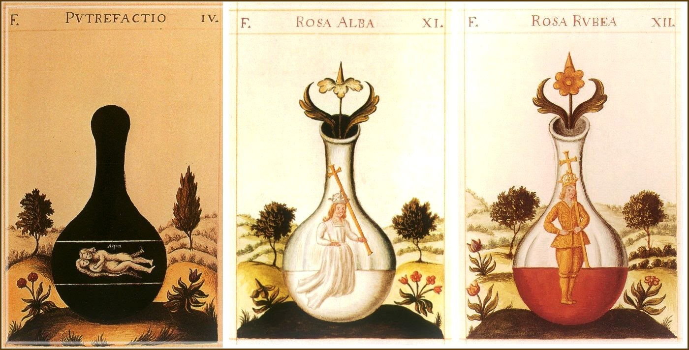Regardless of how the symbols are employed within the variety of Alchemical texts, the question relevant to this analysis is, how do we spot Alchemical symbolism in a work that isn't known to be Alchemical? When we see Shakespeare, for example, describe Adonis as "More white and red than doves or roses are;" the first reasonable assumption is that Shakespeare is speaking figuratively, not literally here. But, given that, the question that immediately follows is: what context should be used for interpreting such language? Is Shakespeare painting with Alchemical pigments, riding on the conventions of Renaissance love poetry, perhaps just patriotically enamored of England?
Red and White in Other Contexts
Here we have two points to address
1. Red and White in Renaissance Love Poetry
When reading Shakespeare's Sonnet 130 wherein the poet compares his mistress' eyes to the sun, lips to coral, skin to snow, and so on, it would be appropriate to assume he is addressing conventional standards of beauty, at least as expressed in poetry, if only because he is using those comparisons to say what she is NOT, i.e. the ideal Beauty.
My mistress' eyes are nothing like the sun; Coral is far more red than her lips' red; If snow be white, why then her breasts are dun; If hairs be wires, black wires grow on her head. I have seen roses damasked, red and white, But no such roses see I in her cheeks; And in some perfumes is there more delight Than in the breath that from my mistress reeks. I love to hear her speak, yet well I know That music hath a far more pleasing sound; I grant I never saw a goddess go; My mistress, when she walks, treads on the ground. And yet, by heaven, I think my love as rare As any she belied with false compare.
Shake starts off the poem essentially going through a list of comparisons of visuals, and so we might assume all of the use of color here is simply a description of physical appearance compared against convention, or poets who came before.
Sir John Suckling makes a similar point in his Sonnet II, where here "red and white" appear to be symbolic of nothing more than external beauty.
Of thee, kind boy, I ask no red and white, To make up my delight; No odd becoming graces, Black eyes, or little know-not-whats in faces; Make me but mad enough, give me good store Of love for her I count; I ask no more, ’Tis love in love that makes the sport. There’s no such thing as that we beauty call, It is mere cozenage all; For though some, long ago, Liked certain colors mingled so and so, That doth not tie me now from choosing new; If I a fancy take To black and blue, That fancy doth it beauty make. ’Tis not the meat, but ’tis the appetite Makes eating a delight; And if I like one dish More than another, that a pheasant is; What in our watches, that in us is found: So to the height and nick We up be wound, No matter by what hand or trick.
One poem where red and white are used to describe the ideals of beauty is in Philip Sidney's 'Astrophil and Stella' (1591)With the veil of absence, I live in sorrow’s night; And if this dark place still shows like a candle-light Some portion of beauty, an amber-coloured head of hair, Milk-white hands, rosy cheeks, or sweeter, redder lips, Or jet-black eyes, in their blackness bright: --Philip Sidney, Astrophil and Stella 91 (lines 4 - 8)
Note that within these four lines, in describing the ideal beauty, Sidney has used amber, white, red, and black, THE COLORS OF THE FOUR STAGES OF ALCHEMICAL TRANSMUTATION. If we count the Sun as citrine, Shakespeare has done the same thing in the first four lines of the above sonnet. Red and White may have become symbols of perfection in love poetry, but is love poetry the chicken or the egg.
It is but Love, which makes his paper perfect white To write therein more fresh the story of delight, While Beauty’s reddest ink Venus for him doth stir. --Philip Sidney, Astrophil and Stella 102
1 2 3 42. Red and White in English Regalia and Heraldry
The flag of England is the Cross of St. George, the dragon-slayer. The red is said to be the dragon's blood painted on his shield which had been pure white.Red and White are prominent colors in English regalia and heraldry, so much that a king draped in red with white fringe has become its own icon of kingship. Not only did kings dress in red and white, but so too did dukes, duchesses, and their peers. Pictured below, a duke, a duchess, and a king.
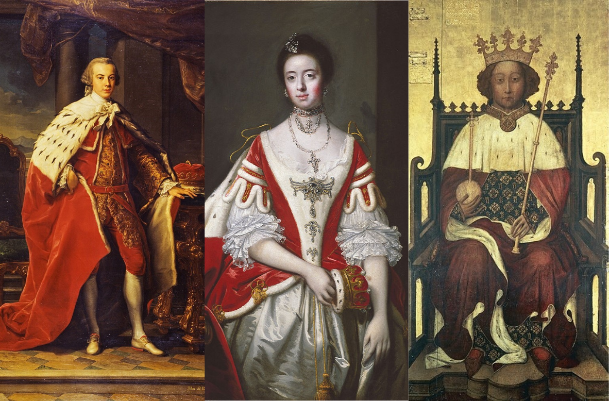 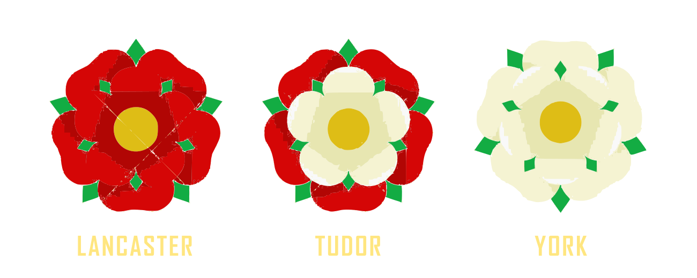The Wars of the Roses, a decades long war in England between the Houses of York and Lancaster, ended with a marriage. Henry Tudor, a claimant for the throne from the Lancastrian side effectively brought the conflict to rest with his victory in the battlefield and his marriage to Elizabeth of York, thus beginning the Tudor Dynasty with the blooming of the Tudor Rose.
William Shakespeare wrote four plays about these wars in the 1590's, about 100 years after the fact. He addresses this union in the final play, Richard III:
Proclaim a pardon to the soldiers fled That in submission will return to us. And then, as we have ta’en the sacrament, We will unite the white rose and the red;
The Wars of the Roses were not so called at the time of the warring, and accounts conflict as to whether the opposing houses actually used roses as their emblems, leaving suspicion that the creation of the Tudor rose by combining a red rose and a white was a bit of propaganda. But, if so, was it only a symbolic way of depicting a united England? Is it possible that Henry Tudor and Elizabeth of York are the original Red King and White Queen and Alchemists adopted this image in their work? Or is it more likely the other way around?
Searching Out the Root of the Red King and White Queen
He that maketh me white shall make me red, for white and red proceedeth from one Root...
The roots of Alchemy are ancient and ideas expressed by Alchemists of Renaissance Europe can be found also expressed by Greek philosophers, Indian gurus, or ancient Chinese sages which is to be expected, for Alchemy as both a spiritual and scientific practice ranged from Asia to Europe and is often found intertwined with religion such as with Taoism in China, and Sufism during the Golden Age of Islam. The origins of Alchemical symbols, however, especially those used in Renaissance Europe onwards, are not so apparent, which could be because, in European history, there is a gap. The Alchemy of the Greco-Roman world seems to have vanished from Europe with the rise of Christianity, though Christianity arguably has a brand of Alchemy all its own.
Almost a thousand years after the birth of Christ, what is commonly called Alchemy was reintroduced to Christian Europe from various influences including the teachings of Muslim philosophers such as Jabir ibn Hayyan (Geber) and the discovery of the Corpus Hermeticum in Macedonia. The general philosophical infusion which brought even Greek philosophy back to the region from which it sprang was a ferment in the cultural transformation we call the Renaissance, from the French word for rebirth.
With this rebirth of "classical" ideals and values came a contagious interest in Greco-Roman mythology that lasted for centuries. The Roman myth of Venus and Adonis was not only the subject of Shakespeare's poem, but of many paintings.
A Concoction of Art and Alchemy
Art had a different place in the social landscape of the mid-second millennium than it does now. Whereas art in modern times is mostly seen as an avenue for artists to express their emotions or individual identity, to prove their unique genius, or just to make money, artists in the Renaissance, especially among their patrons, were akin to priests, or, more to the point, instruments of God. In Alchemy, Art is seen as a complement to Nature such that we could say: if Nature is God's left hand, Art is God's right. Though this is Art in the sense of skill or craft, as in the Art of Healing, when it came to the transformation of society, the Arts as we generalize them (painting, music, poetry, etc.) were seen, as Jesus put it, "like leaven which a woman took and measured and kneaded throughout her dough". This perspective is known to have affected works of art (painting) and architecture. Cathedrals, for example, were often built with the belief that the design of the building itself could facilitate what we might call the religious experience.
Many of the paintings done from the 1400s - 1700s at least were commissioned by wealthy patrons to serve as such transformative agents. Hence, many of these paintings have, as their subject, elements of mythology--which arguably serves the same purpose. If one looks, one might find evidence that the same was true for poetry.
One wealthy family in particular, credited with the flourshing of the Italian Renaissance, was the Medici. Cosimo de Medici (1389 to 1464), the founder of the Medici Dynasty was known for his infatuation with exotic philosophical texts coming from outside Christian Europe, notably the Hermetica and NeoPlationist texts. It was he who commissioned Marsilio Ficino to translate the Corpus Hermeticum. Hermeticism and Alchemy are joined at the hip.
Cosimo I de' Medici (1519-1574), a descendant of Cosimo the Elder's brother, built an Alchemist laboratory in the Palazzo Vecchio (townhall) where his son Francesco is depicted working in the painting on left. In this laboratory, adorned with paintings and sculptures, artists and alchemists would meet.
The Medici were known for patronizing famous artists such as Leonardo Da Vinci, Michelangelo, and Boticelli. One such patronage relevant here was Marie de Medici's patronage of the painter, Peter Paul Rubens. Browsing the Marie de Medici Cycle , a series of paintings commisioned to Rubens in 1622, the prominence of red and white is apparent. The two examples below: Left: The Education of the Princess (Marie), Right: The Coronation of Marie de Medici
 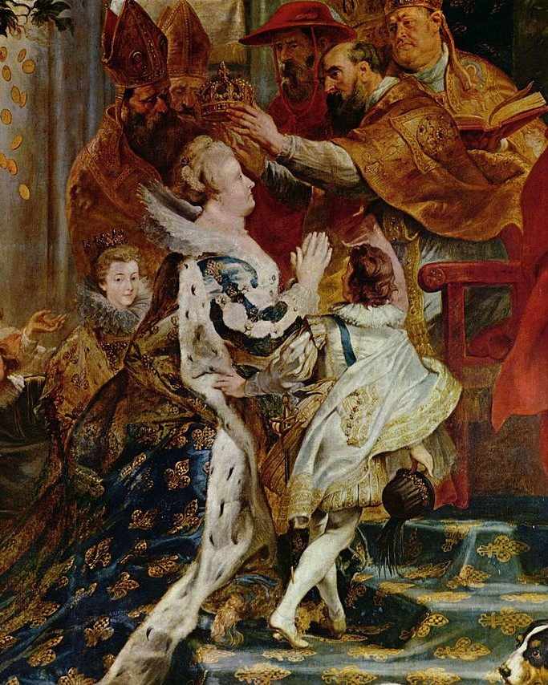
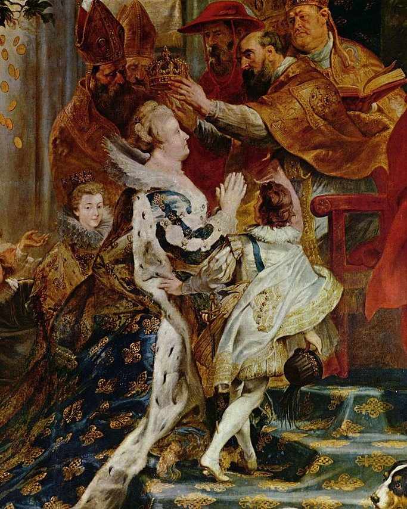
In the Education of the Princess, we see the young Marie attended by the Three Graces, as well as a floating man in a winged helmet we can safely assume is Hermes, the patron god of Alchemy, flanked by red and white sheets. Compare to Boticelli's Primavera (1470 - 1480), also commissioned by the Medici, which has Venus attended by Hermes, the Three Graces, and others. Ruben's color division in both paintings is so distinct it does seem he means to make a point.
Of course, Marie was not the only patron of Rubens. King Philip IV of Spain commissioned him to do a series of more than 60 paintings on themes from Ovid's Metamorphoses. Below are three paintings by Rubens on Venus and Adonis, though who commissioned these I do not know.

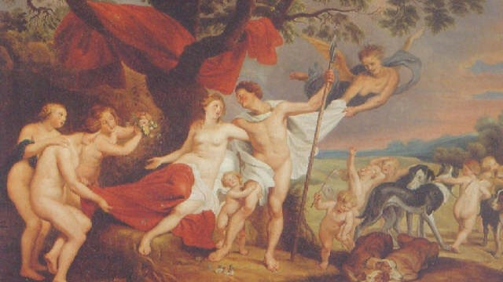
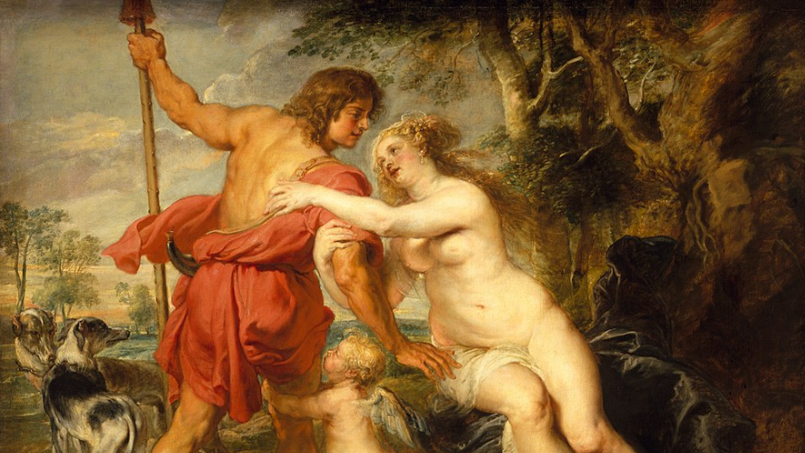
Rubens was not the only painter to take on this subject. Below, six paintings on Venus and Adonis from six different painters ranging from the 1500's to the 1900's.
 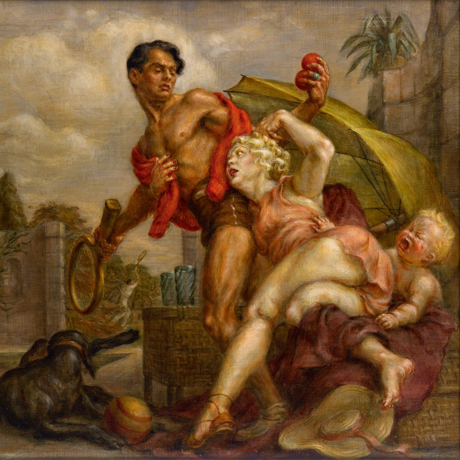
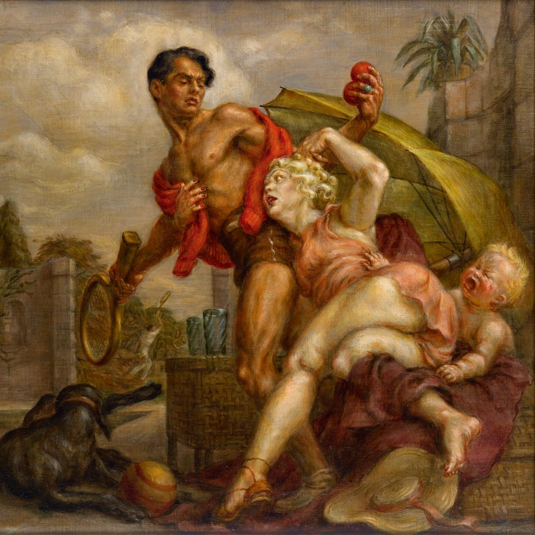
The preponderance of red and white in the paintings of Venus and Adonis might lead us to conclude that these two are the original Red King and White Queen, but as we will see, red and white are often given prominence in paintings of mythological male/female couples, supporting the idea of red and white as representing principles rather than specific characters, or tied with specific names, for Romeo would, were he not Romeo called....
The Challenger Mars
One example of a male/female couple from mythology whose paintings are weighted with red and white, and one of interest here is the pair of lovers, Mars and Venus. Mars and Adonis are typically viewed as distinct deities, which is fitting as they are believed to be from distinct traditions, Adonis from Semitic and Mars from Indo-European traditions. And too, they are associated with different planets from among the Seven Classical Planets, Adonis with the Sun, Mars with the "red planet". However, in Alchemy the Sun is not the only heavenly body associated with the masculine principle--so is the planet Mars. On that note, the Goddess Venus, like the feminine principle of Alchemy, wasn't only associated with the planet of her name, but also with the Moon.
Also worth noting that Mars and Venus are the two planets on either side of the Earth in the rank of orbits, which leaves the possibility that they represent the two extremes for which the Earth is the Golden Mean. However, there is a less dubious reason why these two are to be considered in this search.


Mars
Venus
While it may be a difficult case to make that the arrangement of the planets lead to Mars and Venus being the original Red King and White Queen without evidence, that they are candidates for this position should be considered because from among the symbols for the planets and various pairs of Alchemical symbols linked with the royal couple, it was the symbols for Mars and Venus that came to represent the sexes.
Symbols of the Royal Couple
Sulfur
Mercury
Sun
Moon
Nitre
Salt
Fire
Water
In Shakespeare's poem, Venus tries to persuade Adonis to love by telling him how she subdued and softened Mars, a conquering god without rival.
‘I have been woo’d, as I entreat thee now, Even by the stern and direful god of war, Whose sinewy neck in battle ne’er did bow, Who conquers where he comes in every jar; Yet hath he been my captive and my slave, And begg’d for that which thou unask’d shalt have. ‘Over my altars hath he hung his lance, His batter’d shield, his uncontrolled crest, And for my sake hath learn’d to sport and dance To toy, to wanton, dally, smile, and jest; Scorning his churlish drum and ensign red Making my arms his field, his tent my bed. ‘Thus he that overrul’d I oversway’d, Leading him prisoner in a red-rose chain: Strong-temper’d steel his stronger strength obey’d, Yet was he servile to my coy disdain. O! be not proud, nor brag not of thy might, For mastering her that foil’d the god of fight.
Mars and Venus in Paint
 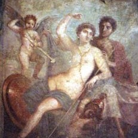
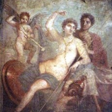
Red and white as individual colors have had significant symbolic meaning for thousands of years in the general culture. Some of this may be due to nothing more than emotional or unconscious response to colors in general, a plausilbe explanation for red's regular use in expressing love, and white's seemingly universal association with innocence. Some of red's significance can be attributed to its place among the three primary colors recognized as early as the Roman Empire: red, blue, and yellow, which not coincidentally are colors associated with royalty, red being the one most associated with power. However, some of the color's significance is clearly due to red's association with a chemical compound known from ancient times as cinnabar.
A Case For Cinnabar as the Original Philosopher's Stone
NATURE begets a mineral in the bowels of the earth. (...) It is found red in its first coagulation, and in it lie hid all the flowers and colours of the minerals.
--Paracelsus, The Treasure of Treasures for Alchemists
Cinnabar is a red salt compound of Sulfur and Mercury mined since prehistoric times. In practical use, cinnabar was valued as the go-to source of the liquid metal, mercury, and ground into a powder as a pigment, commonly known as vermillion, for red paint.
The primary prehistoric use of the mineral was grinding it to create vermillion, and its earliest known use for this purpose is at the Neolithic site of Çatalhöyük in Turkey (7000-8000 BC), where wall paintings included cinnabar's vermillion. Source
Being the product of marriage between an acid and a base, salts in general were seen to depict the union of opposites, but among salts, cinnabar was held up as the prime picture. So, Sulfur and Mercury were also used as symbols for the afore-mentioned king and queen in both Western and Eastern Alchemy, which the Chinese called Yin (Mercury) and Yang (Sulfur). Of course, these two were initially united in one essence called Pure Yang (Cinnabar) before separating into their masculine and feminine counterparts. Whether it was for qualities possessed by its components or by cinnabar itself, that it held high status is clear. In his 'Natural History', the Roman author, Pliny the Elder, states:
(Cinnabar) is of great importance among pigments at the present day, and also in old times it not only had the highest importance but even sacred associations among the Romans. Verrius gives a list of writers of unquestionable authority who say that on holidays it was the custom for the face of the statue of Jupiter himself to be coloured with cinnabar, as well as the bodies of persons going in a triumphal procession, and that Camillus was so coloured in his triumph, and that under the same ritual it was usual even in their day for cinnabar to be added to the unguents used at a banquet in honour of a triumph, and that one of the first duties of the censors was to place a contract for painting Jupiter with cinnabar. For my own part I am quite at a loss to explain the origin of this custom, although at the present day the pigment in question is known to be in demand among the nations of Ethiopia whose chiefs colour themselves all over with it, and with whom the statues of the gods are of that colour.
Ancients knew how to decompose cinnabar for extracting mercury, but also, how to recompose it. Because when cinnabar oxidizes it turns black, it may be the case that splitting blackened cinnabar to its component parts, purifying them, and reuniting them again was seen as revivifying dead cinnabar, and thus a picture of spiritual rebirth and plausible template for the traditional four stages of Alchemy for creating the Philosopher's Stone:
Nigredo (Blackening):
Cinnabar blackens through exposure to light and humidityAlbedo (Whitening):
Dead Cinnabar is heated causing Mercury (feminine) to escape as a white vapor which is then purifiedCitrinitas (Yellowing):
Sulfur (masculine), a yellow substance, remains which is then purifiedRubedo (Reddening):
Cleansed Sulfur and Mercury are merged back together
In China, the earliest known use of cinnabar is the Yangshao culture (~4000-3500 BC). At several sites, cinnabar covered the walls and floors in buildings used for ritual ceremonies. Cinnabar was among a range of minerals used to paint Yangshao ceramics, and, at Taosi village, cinnabar was sprinkled into elite burials. Source
It is supposedly for this symbolic significance of cinnabar that the Chinese flag is red. Red in general was seen as the zenith of colors and, like gold, the champion of metals, was linked with the Sun. So, also in Japan red is linked with the Sun, but more specifically with the Shinto Sun-goddess, Amaterasu, who is often depicted in art like the Japanese flag, in red and white.
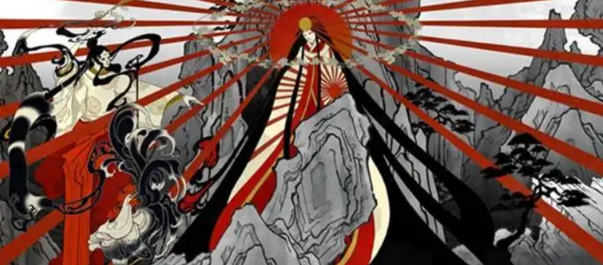Cinnabar is is still used for devotional offerings in India where the mineral is known as sindoor. Like the statues of deities painted with cinnabar by the Romans, idols known as linga or lingam which represent the generative principle of the Universe or Shiva as a penis (aka 'shiva lingam') are ritually dosed with sindoor creating an image that emphasizes the association between cinnabar, potency, and marriage.
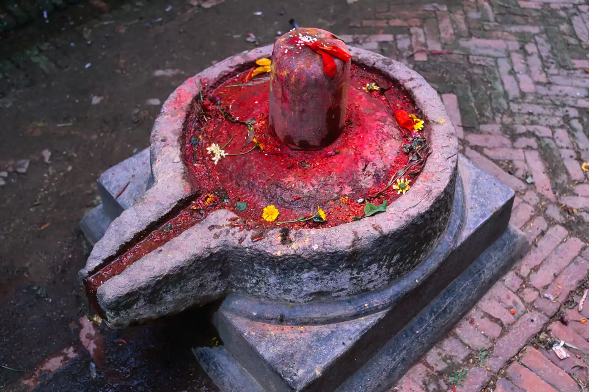 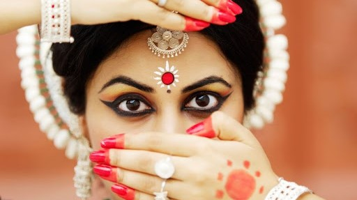In addition, the red bindi dot that married women in India wear between their eyes, a symbol of the third eye, and thus of Enlightenment, was for thousands of years painted on with vermilion, known in India as sindoor, itself a symbol of marriage. This tradition began in the Harappan civilisation which existed in India from 3300–1300 BCE and persisted until it was discovered that mercury is toxic.
Bindi is the feminine form of bindu, the white "point" from which the universe germinated in Shaivism described as a white seed (masculine) in red fleshy fruit (feminine), which together are the hermaphrodite deity, Shiva-Shakti.
The description of Shiva-Shakti as a white seed in red fleshy fruit is opposite the typical Alchemical pairing of color and gender, and is also opposite the pomegranate, a fruit with red seeds and white flesh, though the skin is red... The pomegranate has/had significant symbolic meaning around the world.
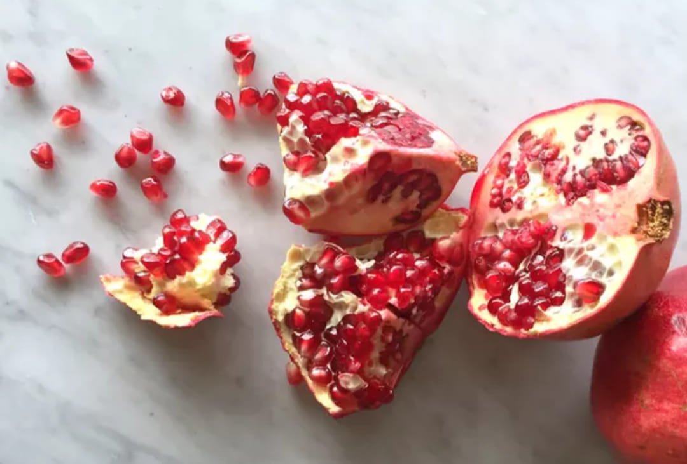Pomegranate Around the World (according to ChatGPT)
- Ancient Egypt: The pomegranate was associated with prosperity and ambition. It was often included in tombs to ensure the deceased had food in the afterlife.
- Judaism: The pomegranate is a symbol of righteousness, knowledge, and wisdom. It is mentioned in the Torah and is one of the seven species of fruits and grains named in the Hebrew Bible as special products of the Land of Israel. The pomegranate’s 613 seeds are said to correspond to the 613 commandments of the Torah.
- Christianity: In Christian symbolism, the pomegranate represents resurrection and eternal life. It appears in religious art, often in depictions of the Virgin Mary and Christ, symbolizing the fullness of Jesus' suffering and resurrection. The fruit’s many seeds can also symbolize the unity of many believers within one church.
- Islam: The pomegranate is mentioned in the Qur'an as one of the fruits that will be found in the gardens of Paradise. It is also seen as a symbol of beauty and paradise.
- Buddhism: In Buddhist symbolism, the pomegranate represents fertility, abundance, and the blessings of prosperity. It is one of the three blessed fruits, along with the peach and the citrus.
- Chinese Culture: The pomegranate is a symbol of fertility, prosperity, and numerous offspring. In Chinese wedding traditions, pomegranates are often used to wish the newlyweds many children.
- Persian Culture: The pomegranate is a symbol of fertility, love, and rebirth. It is a significant part of Persian mythology and culture, often featured in poetry and art.
- Ancient Greece and Rome: Besides the Persephone myth, the pomegranate was a symbol of marriage and fertility. It was associated with the goddess Hera (Juno in Roman mythology), who was the goddess of marriage and childbirth.
- Alchemy: In alchemical symbolism, the pomegranate often represented the unity of opposites, the convergence of different elements to create something whole and unified.
In Sandro Botticeli's 'Madonna of the Pomegranate' (1487) the baby Jesus holds an open pomegranate over his heart, suggesting that its seeds are analogous to the seeds of the Logos which pour out like drops of blood, for the pomegranate is a symbol of resurrection and the Passion of the Christ in Christianity. The Sufi poet Rumi ties the pomegranate, the red anemone and Alchemy together in this short poem, which likens the opening of the pomegranate to the opening of the heart, and thus the ripe pomegranate to the spiritually mature:
If you buy a pomegranate, buy one whose ripeness has caused it to be cleft open with a seed-revealing smile. Its laughter is a blessing, for through its wide-open mouth it shows its heart, like a pearl in the jewel box of spirit. The red anemone laughs, too, but through its mouth you glimpse a blackness. A laughing pomegranate brings the whole garden to life. Keeping the company of the holy makes you one of them Whether you are stone or marble, you will become a jewel when you reach a human being of heart. Plant the love of the holy ones within your spirit; don’t give your heart to anything but the love of those whose hearts are glad. Don’t go to the neighborhood of despair: there is hope. Don’t go in the direction of darkness: suns exist. The heart guides you to the neighborhood of the saints; the body takes you to the prison of water and earth. Give your heart the food of holy friends; seek maturity from those who have matured.
The pomegranate was also a sacred object to Aphrodite/Venus and, along with fertility, symbolized the loss of virginity in the consummation of marriage in her religion or symbolism associated with the Goddess . Coupling this symbolism of the pomegranate with the opening of the heart provides a possible link with the Sacred Marriage as a spirtual awakening that is a "popping of the pomegranate", an opening of the heart which is not only a catharsis or release, but a loss of virginity, a yielding and willingness to be spiritually penetrated or even dominated, in the sense that even men have to take the woman's role.
Summing the Account
So, we have reason to believe that red's symbolism in Alchemy has a natural precedent, possibly more than one, which can serve as foundation for parabolic interpretations. That red would represent the final stage in Alchemical transmutation makes sense if the synthesizing of cinnabar is seen to illustrate the Chemical Marriage, though why red and white would be representatives of gender in that case doesn't fit, as red would be androgynous or hermaphrodite.
We also have evidence of red and white appearing together in cultural/religious contexts outside of Christian Europe where red and white were established as colors for nobility and royalty.
Pending further research, it appears that the Red King and White Queen became prominent symbols in European Alchemy during the Renaissance, but seem to have evolved out of more ancient uses of the colors.Shakespeare's Inspiration and Introduction to the Poem
Shakespeare's poem 'Venus and Adonis' is inaugurated with a Latin quote from the Roman poet Horace:
Vilia miretur vulgus: mihi flavus Apollo Pocula Castalia plena ministret aqua.
Translation:
Let the vulgar crowd admire cheap things; let yellow Apollo Serve me with cups full of Castalian water.
The last part of the quote alludes to the Castalian spring at Delphi where Apollo killed Python and established his oracle. The spring was associated with prophecy and poetic inspiration. Apparently, Shakespare, or the publisher, here is saying he is only concerned with divinely inspired works.
Even if Shakespeare's poem was divinely inspired, it wasn't created ex nihilo. It is believed that Shakespeare based his poem primarily on a tale of the two deities in Ovid's 'Metamorphoses' (8 CE) though he may have been inspired by other stories in the same book for transformation myths centering on a love pursuit is a common motif in the book and in Greco-Roman mythology in general. There are at least 3 transformation myths centering on a nymph or goddess pursuing a man she is in love with in Ovid's Metamorphoses:
- Venus and Adonis
- Echo and Narcissus
- Salmacis and Hermaphroditus
Analysis of the Poem
Initially the plan was only to count how many times the words "red" and "white" or words which imply those colors, such as "blushing" and "pale" appeared together either in the same verse or in the same stanza. As there are 199 stanzas of 6 verses each = 1194 verses, this seemed like a good opportunity to try the programming language Python to accelerate the process but then the question became, how do I come up with an adequate list of words to search for? Seeing as it is Shakespeare, the prospect of trying to think of words that might be used seemed inadequate in a way that I could hear the creator of his own vocabulary rolling in his grave. Not only might I miss numerous words, but also, why search for words that aren't there? So, I used Python to count unique words in the text and put them into a CSV file which lists the 2574 unique words and the number of times each appears in the text.
Going through the list to find relevant words I noticed a lot of pairs of opposites and so gave the list to ChatGPT and asked the bot to sort out pairs of opposites from it. It returned a list of more than 60 pairs. Some of those were redundant such as quick/slow and fast/slow, and some had been missed. So, I addded and removed from the original list of pairs and settled on 72 pairs simply for the sake of presentation--if 72 pairs doesn't make the point, 73 won't either. Note that only single words are searched for here and more opposites would likely be found if phrases were included, such as danger / "where never serpent hisses", nor did I include traditional Alchemical pairings: gold / silver, sun / moon, fire / water or red / white.
Opposites Unite
Pairs of opposites found in 'Venus and Adonis'
Resuming the search for red and white, the list of unique words posed its own challenges as I meant to include words that imply color such as blood, snow, milk, etc. as I already know they are used for such purposes--as in the following verses
Whose frothy mouth bepainted all with red, Like milk and blood being mingled both together,
but where to draw the line? Coming up with a list of red and white terms was to serve two purposes.
- to compare all colors by count
- to count pairings of red and white terms within stanzas and verses.
Color Comparison
A count of color related words selected from the poem.
| Red | 41 | White | 43 | Golden | 6 | Blue | 2 | Black | 4 | Green | 5 | Purple | 5 | ||||||
|---|---|---|---|---|---|---|---|---|---|---|---|---|---|---|---|---|---|---|---|
| red | 13 | white | 9 | golden | 3 | blueveind | 1 | black | 2 | green | 4 | purple | 2 | ||||||
| blood | 10 | pale | 8 | gold | 3 | blue | 1 | coalblack | 1 | verdure | 1 | purplecolourd | 1 | ||||||
| rose | 3 | silver | 5 | blackfacd | 1 | violets | 1 | ||||||||||||
| crimson | 2 | doves | 4 | violet | 1 | ||||||||||||||
| bloody | 2 | lily | 3 | ||||||||||||||||
| rosecheekd | 1 | snow | 2 | ||||||||||||||||
| roses | 1 | ivory | 2 | ||||||||||||||||
| blushd | 1 | ashypale | 1 | ||||||||||||||||
| redrose | 1 | alabaster | 1 | ||||||||||||||||
| rubycolourd | 1 | whiter | 1 | ||||||||||||||||
| wax-red | 1 | frozen | 1 | ||||||||||||||||
| plum | 1 | palefacd | 1 | ||||||||||||||||
| coral | 1 | coldpale | 1 | ||||||||||||||||
| blush | 1 | frothy | 1 | ||||||||||||||||
| blushing | 1 | milk | 1 | ||||||||||||||||
| ripe-red | 1 | whiteness | 1 | ||||||||||||||||
| frosty | 1 | ||||||||||||||||||
| lawn | 1 |
Using the list of red and white terms above, a second search was done using Python to find stanzas and verses where a red and white term appear together. One change to the list was made though. Purple was added to the red column, as purple didn't mean in Shakespeare's time what it does now, i.e. a mix of red and blue, but could be used for a range of hue from violet to dark or rich reds. Twice in the poem, Shakespeare uses purple to denote the color of blood. It was put in its own column above simply for the benefit of the doubt.
199 Stanzas on the Wall
There are 199 stanzas in Shakespeare's 'Venus and Adonis'. The matrix below maps the stanzas to the colors from the lists of red and white words above.
Red and White Stanzas
Stanza 2
‘Thrice fairer than myself’ thus she began ‘The field’s chief flower sweet above compare Stain to all nymphs more lovely than a man More white and red than doves or roses are Nature that made thee with herself at strife Saith that the world hath ending with thy life
We see here a description of a red and white flower, which is also what we see in the last stanza above (195) In Stanza 2 is a description of Adonis (as a flower) by Venus and the last is of the flower that grows from his blood, "resembling well his pale cheeks and the blood which in round drops upon their whiteness stood."
Recall that in the Orphic Hymn, Adonis is called "Sweet plant of Aphrodite (Venus), Love's (Eros/Cupid) delightful flower."
While white and red in Stanza 2 could be taken at first glance to be a conventional way of saying Adonis is beautiful, or even the most beautiful flower in the field, the red on the flower at the end gives us a different meaning. And if the red crown anenomone is supposed to be a reminder to us of the fate of Adonis, what is the point?
The last two lines are peculiar and seem like an overblown exagerration, unless we consider the idea of Adonis as a "flower of fire". An idea implied later in the poem when Adonis dies and Venus responds:
For, he being dead, with him is beauty slain, And, beauty dead, black chaos comes again.
Stanza 4
‘And yet not cloy thy lips with loath’d satiety But rather famish them amid their plenty Making them red and pale with fresh variety Ten kisses short as one one long as twenty A summer’s day will seem an hour but short Being wasted in such time-beguiling sport’
A peculiar stanza, here Venus is telling Adonis to not make himself sick by overindulging on the sweetness of kissing, but to refrain just enough that his lips become both red and pale, perhaps meant to be a sign of balance in love here. Lips in love poetry are typically red, and so having them "red and pale with fresh variety" seems to have less to do with sexual appeal and more to do with the interaction and intermingling of of the pair, an idea we see again.
Stanza 6
Over one arm the lusty courser’s rein Under her other was the tender boy Who blush’d and pouted in a dull disdain With leaden appetite unapt to toy She red and hot as coals of glowing fire He red for shame but frosty in desire
one point of interest here is the use of "dull" and "leaden" (lead is base largely because it is dull) to describe both Adonis' disdain and his sexual appetite recalling "heavy Saturn" in Sonnet 98. Also, Adonis being "unapt to toy" recalls what Venus said about Mars when she claims credit for teaching the direful god of war "to sport and dance, to toy, to wanton, dally, smile, and jest". Toy in Shakepseare's time meant to be playful, frivolous, or flirtatious. Here the use of red and white is put to new use reinforcing this idea of Adonis was one bashful, unapt to toy, for here red is used to illustrate his shame, white to illustrate his frigidity.
Stanza 13
Still she entreats and prettily entreats For to a pretty ear she tunes her tale Still is he sullen still he lours and frets ‘Twixt crimson shame and anger ashy-pale Being red she loves him best and being white Her best is better’d with a more delight
Once again red is for shame, but now white is tied with anger as Adonis becomes increasingly frustrated. The last two lines are a complete mystery, and the idea expressed at the beginning of the poem of Adonis being white and red seems less to do with his cheeks and lips, and more to do with his nature. Ignoring all other uses, red and white appear in the next to last line to mean shameful and angry as in the line just before. Worth noting that despite being associated with spiritual perfection, red and white as representatives of the masculine and feminine principles have their "negative" qualities, but here, Venus loves them regardless.
Stanza 58
O! what a sight it was wistly to view How she came stealing to the wayward boy To note the fighting conflict of her hue How white and red each other did destroy But now her cheek was pale and by and by It flash’d forth fire as lightning from the sky
Though the tension had been building in the previous stanzas, the conflict has now moved to Venus' face. This is not the fresh variety of red and white intermingling in Adonis' lips, but a war between them. Here we have correspondence with an Alchemical text which describes the battle between water and fire.
If much water be poured upon a little fire, the fire is overcome, and compelled to yield up the victory to the water. In the same way our fiery sulphur must be overcome by means of our prepared water. But, after the water has vanished, the fiery life of our sulphurous vapour must triumph, and again obtain the victory. But no such triumph can take place unless the King imparts great strength and potency to his water and tinges it with his own colour, that thereby he may be consumed and become invisible, and then again recover his visible form, with a diminution of his simple essence, and a development of his perfection.
Shakespeare similarly has a conflict between red and white in the face of Lucrece in his poem 'The Rape of Lucrece'
When at Collatium this false lord arrived, Well was he welcomed by the Roman dame, Within whose face Beauty and Virtue strived Which of them both should underprop her fame. When Virtue bragged, Beauty would blush for shame; When Beauty boasted blushes, in despite Virtue would stain that o’er with silver white. But Beauty, in that white entitulèd From Venus’ doves doth challenge that fair field. Then Virtue claims from Beauty Beauty’s red, Which Virtue gave the golden age to gild Their silver cheeks, and called it then their shield, Teaching them thus to use it in the fight: When shame assailed, the red should fence the white. This heraldry in Lucrece’ face was seen, Argued by Beauty’s red and Virtue’s white. Of either’s color was the other queen, Proving from world’s minority their right. Yet their ambition makes them still to fight, The sovereignty of either being so great That oft they interchange each other’s seat. --Shakespeare, The Rape of Lucrece
Stanza 78
And at his look she flatly falleth down For looks kill love and love by looks reviveth A smile recures the wounding of a frown But blessed bankrupt that by love so thriveth! The silly boy believing she is dead Claps her pale cheek till clapping makes it red
Stanza 99
‘The boar!’ quoth she whereat a sudden pale Like lawn being spread upon the blushing rose Usurps her cheeks she trembles at his tale And on his neck her yoking arms she throws She sinketh down still hanging by his neck He on her belly falls she on her back
Stanza 151
Whose frothy mouth bepainted all with red Like milk and blood being mingled both together A second fear through all her sinews spread Which madly hurries her she knows not whither This way she runs and now she will no further But back retires to rate the boar for murther
One example of red and white clearly not being used to symbolize beauty is this description of the mouth of the boar that killed Adonis, unless we link it to the frothy mouth of the ocean which spit out the pearl, Venus.
Stanza 195
By this the boy that by her side lay kill’d Was melted like a vapour from her sight And in his blood that on the ground lay spill’d A purple flower sprung up chequer’d with white Resembling well his pale cheeks and the blood Which in round drops upon their whiteness stood
As pointed out already, this stanza recalls Stanza 2 which describes Adonis as a flower, but furthermore it recalls the very first stanza of the poem which describes the purple-coloured face of the Sun taking its last leave of the weeping morn.
The purple blood on Adonis' face in death is analogous to the purple face of the Sun as it sets, i.e. it is "blood-colored". And, like women of Rome weeping for Adonis, the morn in Shakespeare's poem is "weeping" for the Sun who has "ta'en his last leave". So, not only does the setting sun foreshadow the death of Adonis, but furthermore points to the idea that the myth has its origin in the Sun's cycle, as if Shakespeare is saying: Had Adonis paid attention to the sign in the sky, he wouldn't have gone on the chase.